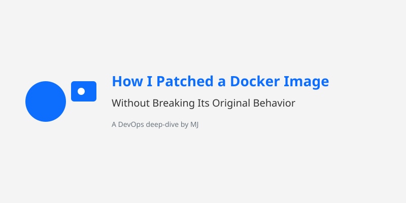

“When you want to tweak a Docker image but treat its structure like a sacred temple.”

I had to make a minor update to an existing Docker image — just a small edit to the /etc/hosts file. Easy, right?
But here’s the catch:
ENTRYPOINT would kick in immediately.Classic case of “sneak in, do the job, leave no trace.”
/etc/hosts — Add a custom host entry.ENTRYPOINT and CMD.docker inspect nginx:latest --format='ENTRYPOINT={{json .Config.Entrypoint}} CMD={{json .Config.Cmd}}'Let’s say the output was:
ENTRYPOINT=["/docker-entrypoint.sh"]
CMD=["nginx","-g","daemon off;"]docker create --name temp-container --entrypoint /bin/sh nginx:latestOR
docker run -itd --name temp-container --entrypoint=sh nginx:latestdocker start temp-container
docker exec -it temp-container /bin/shInside the container:
echo "192.168.1.100 mycustomhost" >> /etc/hosts
exitdocker commit --change 'ENTRYPOINT ["/docker-entrypoint.sh"]' \
--change 'CMD ["nginx","-g","daemon off;"]' \
temp-container nginx:latest-newdocker rm -f temp-containerdocker inspect nginx:latest-new --format='ENTRYPOINT={{json .Config.Entrypoint}} CMD={{json .Config.Cmd}}'docker run --rm nginx:latest-new cat /etc/hostsdocker run --rm nginx:latest-newHere’s a teaser for a future post: I’ve built a shell script that automates this entire process — from inspecting to committing — for any image.
#!/bin/bash
# Usage: ./docker-image-patcher.sh <image-name> <new-image-tag> <host-entry>
# Example: ./docker-image-patcher.sh nginx:latest nginx:patched "192.168.1.100 mycustomhost"
set -e
IMAGE_NAME="$1"
NEW_IMAGE_TAG="$2"
HOST_ENTRY="$3"
if [[ -z "$IMAGE_NAME" || -z "$NEW_IMAGE_TAG" || -z "$HOST_ENTRY" ]]; then
echo "Usage: $0 <image-name> <new-image-tag> <host-entry>"
exit 1
fi
TEMP_CONTAINER="temp-container-$$"
echo "🔍 Inspecting original image: $IMAGE_NAME"
ORIGINAL_ENTRYPOINT=$(docker inspect "$IMAGE_NAME" --format='{{json .Config.Entrypoint}}')
ORIGINAL_CMD=$(docker inspect "$IMAGE_NAME" --format='{{json .Config.Cmd}}')
echo "📋 Original ENTRYPOINT: $ORIGINAL_ENTRYPOINT"
echo "📋 Original CMD: $ORIGINAL_CMD"
echo "🚧 Creating temp container: $TEMP_CONTAINER"
docker create --name "$TEMP_CONTAINER" --entrypoint /bin/sh "$IMAGE_NAME" > /dev/null
echo "🚀 Starting and patching /etc/hosts"
docker start "$TEMP_CONTAINER" > /dev/null
docker exec "$TEMP_CONTAINER" sh -c "echo '$HOST_ENTRY' >> /etc/hosts"
echo "📦 Committing new image: $NEW_IMAGE_TAG"
docker commit \
--change "ENTRYPOINT $ORIGINAL_ENTRYPOINT" \
--change "CMD $ORIGINAL_CMD" \
"$TEMP_CONTAINER" "$NEW_IMAGE_TAG" > /dev/null
echo "🧹 Cleaning up temp container"
docker rm -f "$TEMP_CONTAINER" > /dev/null
echo "✅ Image $NEW_IMAGE_TAG created with patched /etc/hosts"Sometimes, the best kind of Docker change is the one that’s invisible to the rest of your system.
This technique lets you make surgical tweaks without blowing up the image’s original purpose — a powerful skill when you're working with shared base images in large CI/CD pipelines.